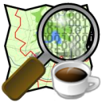

Introducción a OpenStreetMap
Segunda parte
Xirivella · Mayo 2012
Agenda
- Flujo de trabajo básico en OSM
- Tipos de datos
- Potlach como primer editor básico
- JOSM (si hay tiempo)
Ejercicio 3: alta en OSM
Flujo de trabajo
Recolectar
- Tomando datos directamente
- GPS + libreta/cámara/grabadora/...
- Walking Papers
- Mapping Parties!!
- Digitalizando sobre imágenes
- Bing, Yahoo, PNOA, Landsat, ...
- ...

Tomando datos con GPS

Walking Paper


¡¡Lo primero que hay que hacer
es darse de alta!!
Editores de datos OSM
-
JOSM
- escritorio, Java
- mucha funcionalidad, plugins, etc
- Potlach 2
- directamente en la web de OSM
- bueno para corregir etiquetas y ediciones sencillas
- ... hay muchos más
¿Qué pasa con los datos una vez se suben y se actualiza la base de datos?
Los renderizadores actualizan los datos
- un software se conecta a la base de datos
- genera teselas en varios estilos oficiales


Ejercicio: navegar por mapas de OSM
Visita alguno de los sitios propuestos y comprueba diferentes formas de ver la cartografía de OSM.
Flujo de trabajo
- Recolectar
- Editar
- Renderizar
El modelo de datos
Modelo de datos
- Primitivas gráficas
- Nodos
- Vías (si se cierran pueden ser un área)
- Atributos alfanuméricos
- Relaciones
- Etiquetas
Etiquetas
- Dan semántica a las primitivas gráficas
y relaciones - Definidas por la comunidad en el wiki

Nodos
- Atributos importantes :identificador, latitud y longitud, usuario que creó el nodo y versión
- Contenido: etiquetas

Vías
- Atributos: identificador, usuario, versión
- Contenido: lista de nodos y etiquetas

Relaciones
- Atributos: id, visible, usuario y timestamp
- Contenido
- Miembros: id, tipo y rol en la relación
- Etiquetas
Potlach, el editor web de OSM
Objetivo para hoy: conseguir que hagáis vuestra primera contribución a OSM usando este editor
Algunas recomendaciones
- No hay miedo a subir cambios, solo se necesita sentido común
- No se mapea para el renderizador
- Ten a mano la página de features
- Ten en cuenta la conectividad de las vías
- Aprende del trabajo ya hecho, busca ejemplos
Ejercicio: Subir un bar a OSM
- Ya, más español imposible :-)
- Identifícate en OSM
- Navega a una zona que conozcas bien, tu barrio p.ej.
Ejercicio: Subir un bar a OSM
- Pulsa en el triángulo junta a Editar y selecciona Potlach 2
- Vamos a colocar un bar
Ejercicio: Subir un bar a OSM
- Con la tecla M maximizamos la ventana
- Arrastra el icono de Restaurant a su posición
- Ponle un nombre y elige una cocina (cuisine)
Ejercicio: Subir un bar a OSM
- Pulsa la tecla S y escribe un comentario de qué has hecho
¡Enhorabuena, acabas de contribuir al mayor proyecto de cartografía participativa de la historia!
Para casa
- Estamos en L'Horta, hay montones de caminos rurales para levantar
- Busca datos similares, comprueba las etiquetas
- Busca zonas de juegos, pistas deportivas, zonas verdes
Java OpenStreetMap
Editor

- http://josm.openstreetmap.de/
- Potente editor OSM
- Carga datos GPX
- Carga imágenes (TMS/WMS)
- Extensible mediante plugins
- Altamente especializado
- Fácil instalación vía Java Web Start
Descargar datos
Cargar GPX
Imagen de fondo
Comandos más usados

Subir los cambios
Eso es todo
¿No te dan ganas de entrar a editar? ¡ánimo!
¡¡Y apúntante a la lista de correo!!
http://lists.openstreetmap.org/listinfo/talk-es
Licencia